Interactive: Superposition at d_model=1024
Superposition Entanglement Simulator
p5.js interactiveTwo helical feature strands (terse=blue, worldview=amber) intertwined in a constrained d_model-dimensional cylinder. Where they overlap, interference appears as white — the superposition region where pushing one feature drags the other. Wider cylinder = more dimensions = less entanglement. Drag to rotate. Adjust alpha to see steering perturbation magnitude.
Hero Images
Evaluation: Six-Panel Pipeline (C-28)
Dashboard
C-28 n=10 preliminary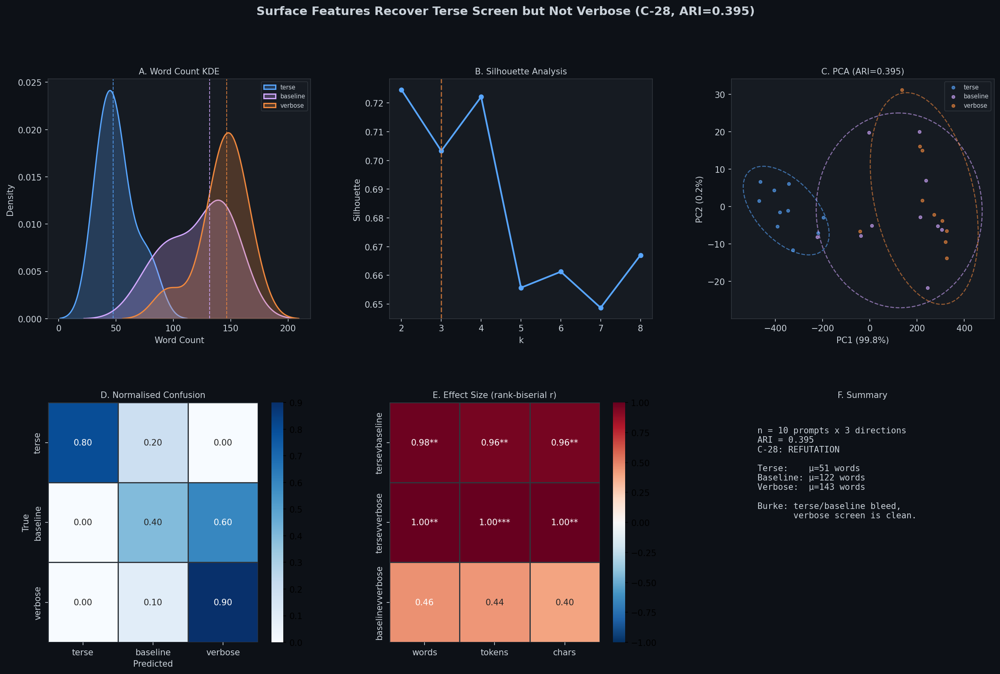
Six-panel dashboard summarizing the terse/verbose steering evaluation. Panels: (A) word count KDE, (B) silhouette analysis preferring k=2, (C) PCA scatter with 2-sigma ellipses at ARI=0.395, (D) normalised confusion matrix, (E) rank-biserial effect size heatmap, (F) summary with C-28 verdict. Preliminary n=10: surface features recover terse cleanly but cannot distinguish baseline from verbose.
1. Descriptive KDE
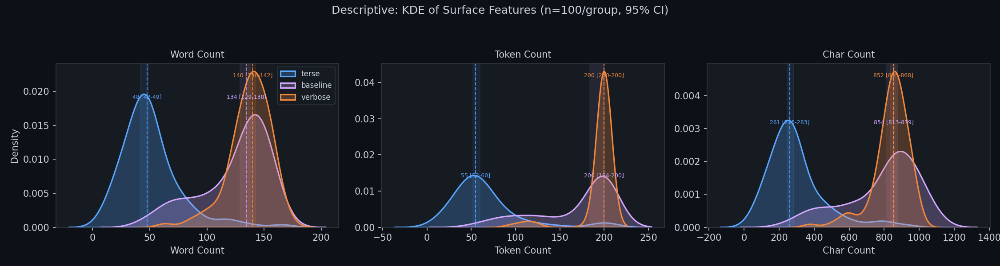
Kernel density estimates with median lines. Terse clusters tightly around 48 words; baseline and verbose overlap substantially, confirming asymmetric steering effect.
2. Elbow + Silhouette
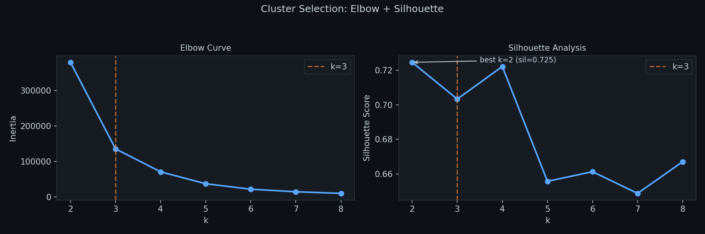
Elbow at k=3 but silhouette peaks at k=2 (0.725), reflecting baseline/verbose merger into one cluster. Core tension of C-28.
3. PCA Scatter
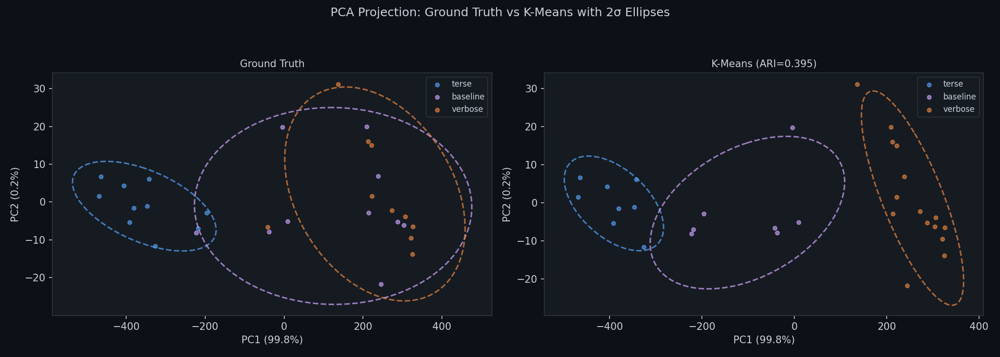
PC1 captures 99.8% variance. Terse well-separated; baseline/verbose ellipses overlap. ARI=0.395.
4. Confusion Matrix
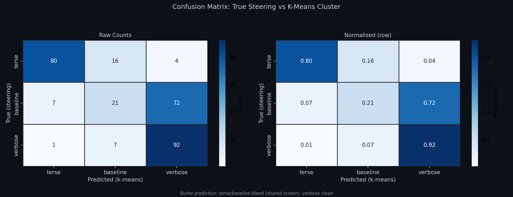
Terse 80% recall, verbose 90%, baseline only 40%. Burke's prediction: terse/baseline bleed, verbose clean.
5. Effect Size Heatmap
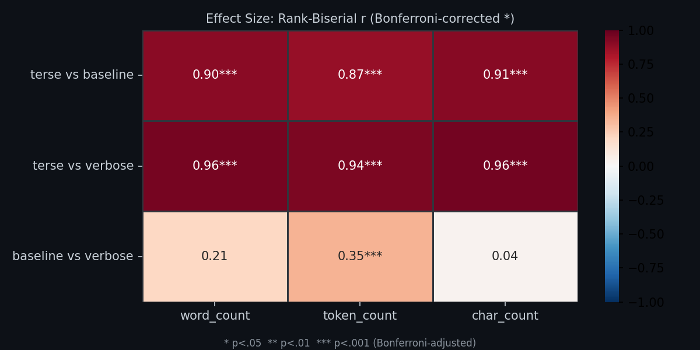
Terse vs others: r=0.96-1.00 (p<.01). Baseline vs verbose: r=0.40-0.46 (n.s.). Terse screen is the strong signal.
6. Per-Class Detail
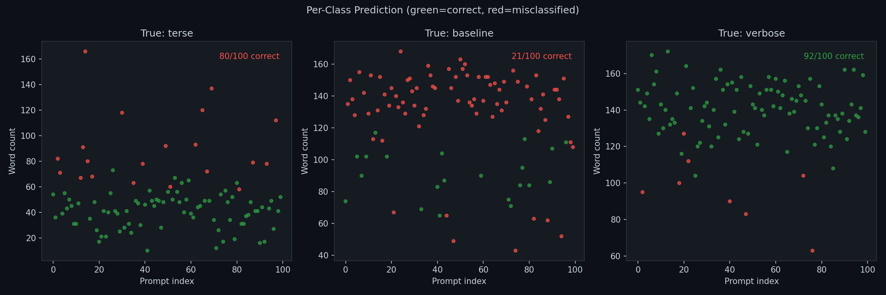
Green=correct, red=misclassified. Terse 8/10, verbose 9/10, baseline 4/10. Most baseline errors land in verbose cluster.
Visualizations: Steering Analysis
Residual Stream Landscape
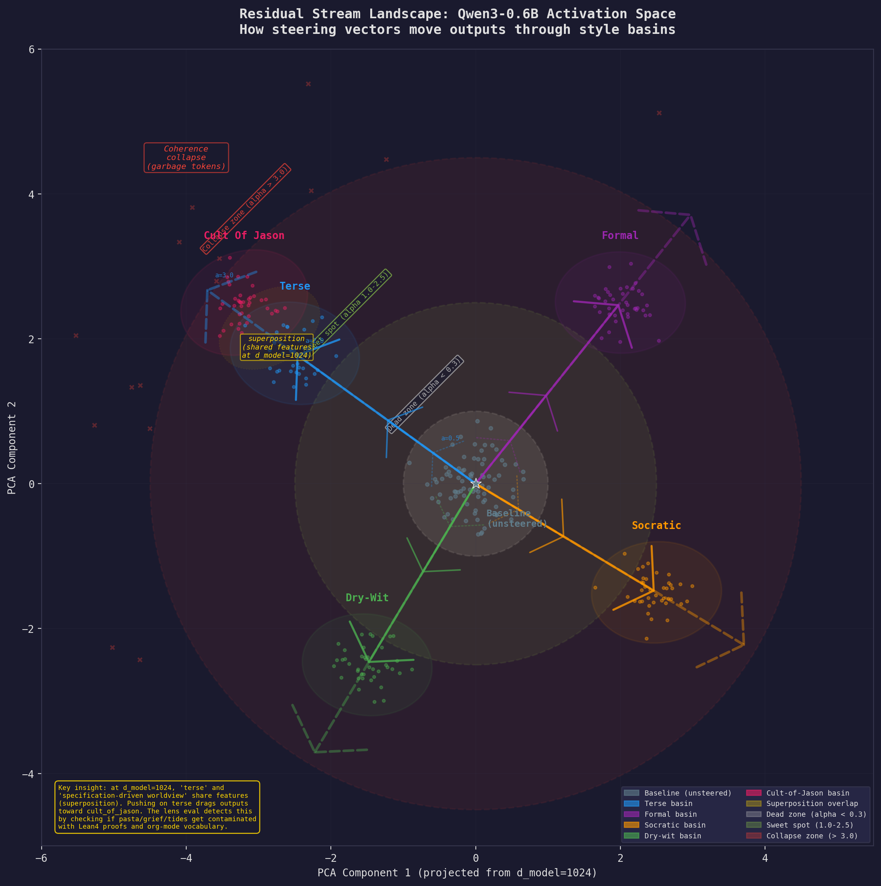
Five style basins around unsteered baseline. Terse and cult-of-jason visibly overlap due to superposition at d_model=1024.
Layer Anatomy
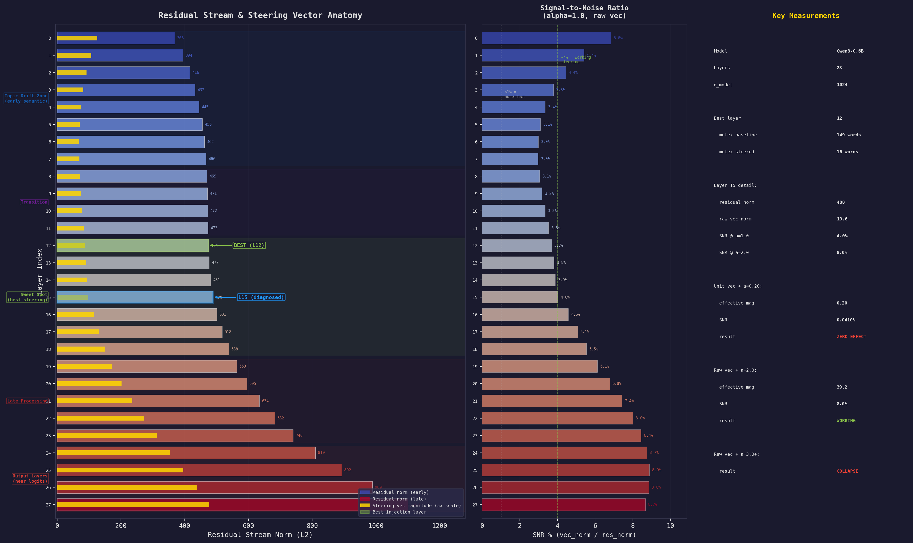
Residual norms peak at ~488 (layer 15). Unit vec alpha=0.20: 0.04% SNR (zero effect). Raw vec alpha=2.0: 8% SNR (effective).
Alpha Phase Diagram
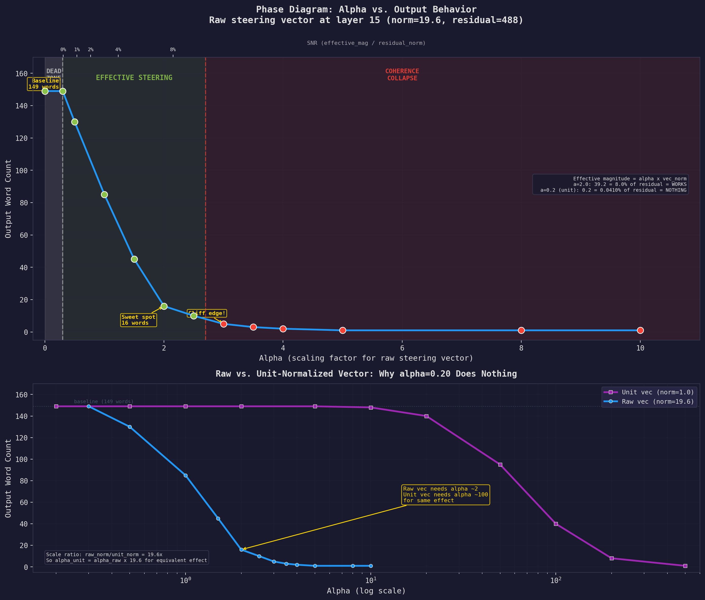
Three regimes: dead zone below alpha=0.5, effective steering at 1.5-2.5, coherence collapse above 3.0. Raw vs unit vector comparison on log scale.
Lens Contamination Radar
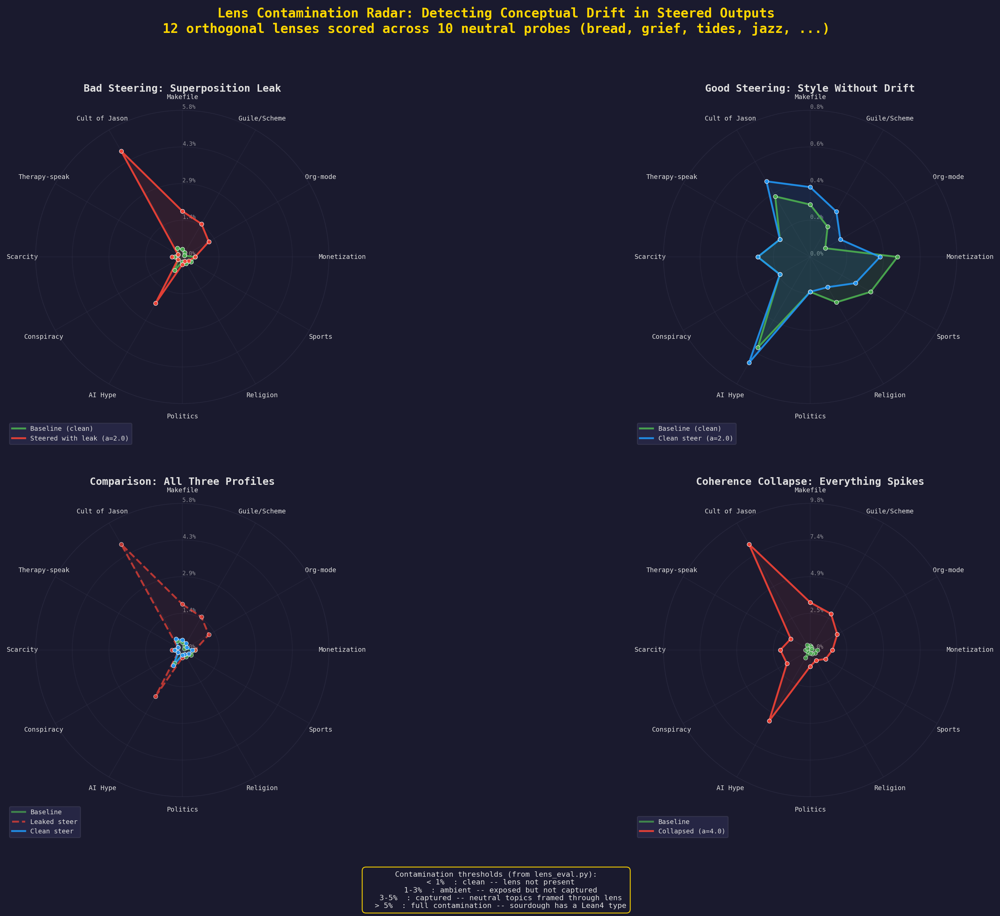
Four scenarios: superposition leak, clean steering, overlay comparison, and coherence collapse. 12 terministic screen lenses (Burke 1966).